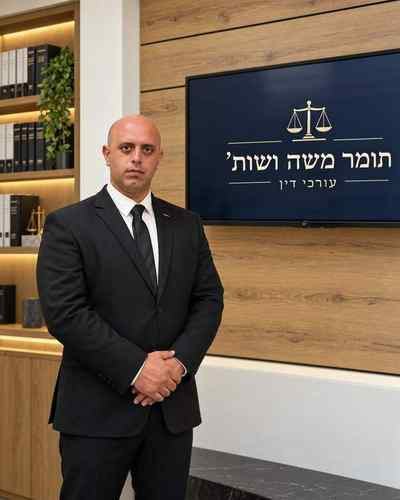

Работа строится на точной оценке фактов, тщательной подготовке документов, понятной коммуникации и ответственном ведении юридического процесса.
Профессиональный профиль
Томер Моше
Томер Моше сопровождает частных клиентов, предпринимателей и компании по вопросам недвижимости, городского обновления, несостоятельности, исполнительного производства, наследства, договоров и коммерческого права.

Адвокат